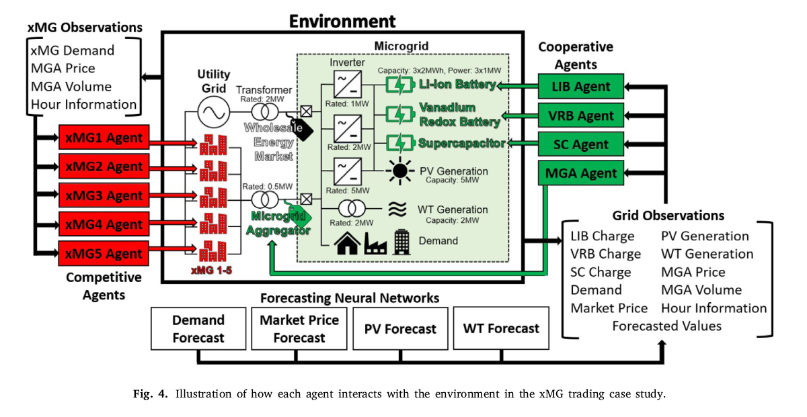
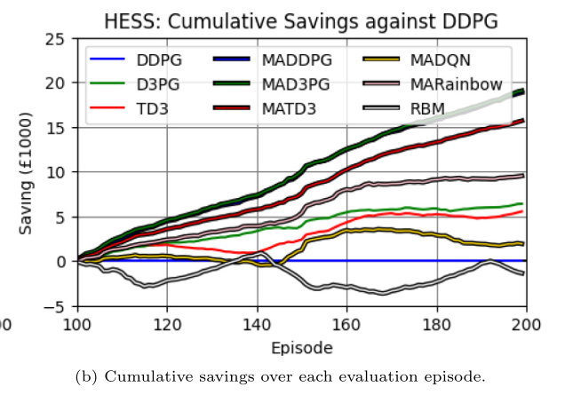

1 Resumen y contribuciones del artículo
Primer uso de MADDPG en un escenario de microrred MAS mixto (cooperativo + competitivo) para integración de RES y arbitraje energético.
Combina arbitraje energético e integración de renovables en un único problema bajo precio dinámico asimétrico (compra ≠ venta).
Evalúa controlador global único vs. múltiples agentes distribuidos con recompensa de contribución marginal.
Compara 9 algoritmos de forma sistemática:
DDPG vs MADDPG: la diferencia clave
El paper fundamenta la necesidad de MADDPG a partir del fallo de DDPG en entornos multi-agente (sección 3.3). La diferencia no es solo de escala, sino estructural:
Controla todo el entorno desde un solo agente. En esta microrred, un agente único emite tres acciones simultáneas (una por ESS). Solo observa su propio estado: no tiene información directa sobre lo que hacen el panel solar, la turbina eólica o el mercado en el mismo instante.
El agente puede observar exactamente el mismo estado y ejecutar la misma acción, pero recibir una recompensa completamente diferente según lo que hagan los demás — lo que hace el aprendizaje muy difícil.
Cuatro agentes especializados (PV, WT, ESS, xMG) actúan en paralelo, cada uno con su propia red actor y su propia red crítica. Durante el entrenamiento cada crítico observa las acciones de todos los agentes; en ejecución cada actor decide únicamente con su observación local.
2 La microrred
La microrred principal es una red AC/DC híbrida con inversores y transformadores. Está conectada a la red eléctrica (mercado mayorista dinámico), tiene generación PV + eólica y un HESS de tres tecnologías. Además, en el segundo caso de estudio, puede vender energía a 5 microrredes externas (xMGs).

Generación renovable
| Fuente | PV = Photovoltaic WT = Wind Turbine | Capacidad máx. | Modelo | Datos de entrada |
|---|---|---|---|---|
| Solar PV | Panel / granja fotovoltaica | 5 MW | Escalado lineal de irradiancia → potencia | Radiación solar horaria — Keele University |
| Eólica WT | Aerogenerador (Wind Turbine) | 2 MW | Curva de potencia trozos — Ec. 30 | Velocidad de viento horaria — Keele University |
☀️ Modelo PV — Radiación solar → Potencia escalada
Los paneles fotovoltaicos convierten la radiación solar en electricidad. El paper usa un modelo de escalado lineal: la irradiancia medida cada hora en la estación de Keele se multiplica por un factor de escala tal que cuando la irradiancia alcanza su valor de referencia máximo, la salida es exactamente \(X^\text{PV}_\text{max} = 5\,\text{MW}\).
Medida en W/m² (vatios por metro cuadrado de superficie). Varía entre 0 (noche / nublado) y ~1 000 W/m² (día despejado, sol cenital). Los datos son horarios — un punto por cada hora del año.
\[X^\text{PV}_t = G_t \times \frac{X^\text{PV}_\text{max}}{G_\text{ref}}\] Donde \(G_t\) es la irradiancia en la hora \(t\) y \(G_\text{ref}\) es el valor de referencia (irradiancia máxima del dataset). La relación es directamente proporcional: el doble de sol → el doble de potencia.
\(X^\text{PV}_t \in [0,\, 5\,\text{MW}]\). A mediodía en verano la granja puede entregar los 5 MW completos; de noche es siempre 0. Esta variabilidad impredecible es la que el agente debe aprender a gestionar.
💨 Curva de potencia eólica (Ec. 30)
La potencia de cada turbina se modela en tres zonas según la velocidad del viento \(v\):
| Parámetro | Símbolo | Valor | Significado |
|---|---|---|---|
| Velocidad de arranque | \(v_\text{ci}\) | 3 m/s | Por debajo de esta velocidad la turbina no genera |
| Velocidad nominal | \(v_r\) | 12 m/s | A partir de aquí la potencia se limita a la nominal |
| Velocidad de parada | \(v_\text{co}\) | 25 m/s | Por encima de esta velocidad la turbina se detiene por seguridad |
| Radio de pala | \(r\) | 30 m | Comparable a una turbina real de 1 MW nominal |
| Coeficiente de potencia | \(c_p\) | 0.4 | Fracción de energía cinética del viento convertida en electricidad |
| Potencia nominal | \(X^\text{WT}_\text{rated}\) | 1 MW / turbina | Potencia máxima de cada aerogenerador |
| Número de turbinas | — | 2 | Capacidad total máxima: 2 MW |
Precios de energía
Los precios \(P^\text{grid}_t\) se toman de un mercado de energía mayorista en tiempo real del Reino Unido con resolución horaria.
El precio de compra está limitado a \(P_\text{max} = £144\text{/MWh}\), que es la tarifa plana media del Reino Unido. Si el precio de mercado supera ese techo, la microrred compra directamente a la red a ese precio fijo en lugar del precio de mercado.
La energía vendida de vuelta a la red se paga siempre a \(P_\text{min} = £16\text{/MWh}\), independientemente del precio de mercado.
Este valor equivale a la tarifa de inyección para un sistema eólico de 0.1–1.5 MW instalado tras el 1 de enero de 2019 en el Reino Unido, y es prácticamente idéntico a los £15.9/MWh de un sistema PV de 0.25–1 MW instalado en la misma fecha.
| Dirección | Precio | Mecanismo | Impacto en el agente |
|---|---|---|---|
| Compra | Dinámico · techo £144/MWh | Mercado mayorista UK en tiempo real | Conviene comprar cuando el precio es bajo y almacenar |
| Venta | Fijo £16/MWh | Feed-in tariff regulado (UK) | Vender siempre sale muy a cuenta si sustituye compra cara |
| Spread máx. | £128/MWh | £144 − £16 | El margen de arbitraje potencial máximo por MWh almacenado |
3 HESS — Sistema Híbrido de Almacenamiento de Energía
HESS = Hybrid Energy Storage System. Combina tres tecnologías complementarias con las mismas restricciones físicas (Cmax = 2 MWh, Xmax = 1 MW) pero propiedades muy distintas. El agente debe aprender a explotar las fortalezas de cada una según el momento del día, el precio y la generación renovable disponible.
Glosario de acrónimos (columnas de la Tabla 1)
| Acrónimo | Significado completo | Qué mide | Impacto en el agente |
|---|---|---|---|
| ESS | Energy Storage System Sistema de Almacenamiento de Energía |
Tipo de tecnología de almacenamiento | Cada ESS tiene un agente propio en MADDPG. En single-agent, un único controlador gestiona los tres. |
| ηRTE | Round-Trip Efficiency Eficiencia de ida y vuelta |
Fracción de la energía que se recupera al descargar lo que se cargó. Si ηRTE = 95%, por cada 1 MWh cargado se recuperan 0.95 MWh al descargar. | Aparece en la Ec. 28: c_t = x_t √η_RTE + c_{t-1} · η_SDC.
Una ηRTE baja (VRB = 80%) hace costoso cargar y descargar frecuentemente. |
| ηSDC | Self-Discharge per hour Autodescarga por hora |
Fracción de la carga que permanece después de una hora sin usar el ESS. Si ηSDC = 99%, el ESS pierde 1% de su carga almacenada cada hora. | Una autodescarga alta (SC = 99% → pierde 1%/h) penaliza el almacenamiento a largo plazo. El agente aprende a no sobrecargar el SC para almacenar energía varios días más tarde. |
| Ciclos | Lifecycles Ciclos de vida totales |
Número de ciclos completos (carga total → descarga total) que el ESS soporta antes de degradarse significativamente. Un ciclo = carga de 0 a Cmax y vuelta a 0. | Determina directamente el costo por ciclo PCPC. Un SC tiene 100 000 ciclos → es baratísimo de operar aunque se use continuamente. |
| PCPC | Cost Per Cycle Costo por ciclo de operación |
Coste en £ de realizar un ciclo completo de carga-descarga, calculado a partir de la capacidad, el coste por kWh y el número de ciclos de vida: PCPC = (capacidad × coste/kWh) / ciclos_de_vida | Se incluye como penalización en la recompensa del agente (Ec. 29). Evita que el agente desgaste innecesariamente las baterías costosas (LIB, VRB) cuando el beneficio energético no lo justifica. |
Tabla 1 del paper — Parámetros por tecnología
| ESS | Nombre completo | Uso óptimo | ηRTE | ηSDC/h | Ciclos | PCPC |
|---|---|---|---|---|---|---|
| LIB | Lithium-Ion Battery Batería de Iones de Litio |
Mediano plazo horas – días |
95 % | 99.99 % pérdida ≈ 0.01 %/h |
5 000 | £ 40 |
| VRB | Vanadium Redox Battery Batería de Flujo de Vanadio-Redox |
Largo plazo días – semanas |
80 % peor eficiencia |
100 % sin autodescarga |
10 000 | £ 40 |
| SC | Supercapacitor Supercondensador |
Corto plazo minutos – horas |
95 % | 99 % pérdida ≈ 1 %/h — alta |
100 000 20× más que LIB |
£ 6 operación casi gratis |
Costo de operación PCPC en la recompensa (Ec. 29)
El agente es penalizado proporcionalmente al cuadrado del cambio relativo de carga, multiplicado por el costo por ciclo de esa tecnología:
El parámetro \(P_\text{CPC}\) está definido en el paper como el costo de un ciclo completo: cargar la batería desde 0 hasta \(C_\text{max}\) y después descargarla de vuelta a 0. Matemáticamente, eso equivale a un cambio acumulado de \(2 \times C_\text{max}\) (subida + bajada).
Sin embargo, en cada paso horario el ESS solo puede hacer una de las dos cosas: o cargar o descargar — nunca ambas al mismo tiempo. Por tanto, cada paso representa como máximo la mitad de un ciclo completo.
Para que la suma de todos los pasos de un ciclo completo dé exactamente \(P_\text{CPC}\), hay que escalar cada paso por \(\frac{1}{2}\):
\[\underbrace{0.5 \cdot P_\text{CPC} \cdot \left(\frac{\Delta c}{C_\text{max}}\right)^2}_{\text{costo del semi-ciclo en 1 paso}}\]| Escenario | \(\Delta c / C_\text{max}\) | Factor cuadrático | Costo (LIB, \(P_\text{CPC}=£40\)) |
|---|---|---|---|
| Carga del 0 al 100 % en 1 paso | 1.0 | \(1.0^2 = 1\) | \(0.5 \times 40 \times 1 = £20\) |
| Descarga del 100 % al 0 en 1 paso | −1.0 | \((-1)^2 = 1\) | \(0.5 \times 40 \times 1 = £20\) |
| Ciclo completo (suma de 2 pasos) | — | — | \(£20 + £20 = £40 = P_\text{CPC}\) ✓ |
| Cambio pequeño (10 %) | 0.1 | \(0.1^2 = 0.01\) | \(0.5 \times 40 \times 0.01 = £0.20\) |
El exponente cuadrático penaliza más los cambios bruscos: un cambio del 50 % de carga cuesta \(0.5^2 = 0.25\) (25 % del P_CPC), pero dos cambios del 25 % cuestan \(2 \times 0.25^2 = 0.125\) (12.5 %). Los agentes aprenden a preferir variaciones graduales y a usar el SC (P_CPC bajo = £6) para las fluctuaciones rápidas, reservando la LIB/VRB para movimientos lentos.
4 Fundamentos de Aprendizaje por Refuerzo
En cada paso de tiempo \(t\) el agente observa \(s_t\), selecciona \(a_t\), recibe \(r_t\) y transiciona a \(s_{t+1}\). El objetivo es aprender una política \(\pi\) que maximice la recompensa futura descontada.
| Categoría | Descripción |
|---|---|
| Función de valor | Aprende \(Q(s,a)\) o \(V(s)\) directamente. La política se deduce eligiendo la acción con mayor Q. |
| Gradiente de política | Parametriza la política \(\pi_\theta(a|s)\) directamente y optimiza subiendo el gradiente del retorno esperado. |
| Actor-Crítico | El actor \(\mu_\phi(s)\) produce acciones continuas. El crítico \(Q_\theta(s,a)\) evalúa su calidad. Aprenden en paralelo, cada uno guiando al otro. |
- Acción continua: La carga/descarga de una batería es un valor real en kW — no hay lista finita de opciones. DQN/Rainbow no pueden manejar esto sin discretizar artificialmente el espacio.
- Off-policy: Actor-crítico con replay buffer reutiliza cada transición muchas veces — crítico con solo 35 000 pasos reales disponibles.
- Determinístico: DDPG produce directamente \(\mu_\phi(s) \in \mathbb{R}\) sin muestrear de una distribución, lo que da gradientes de menor varianza y convergencia más rápida en espacios continuos.
5 DDPG — Deep Deterministic Policy Gradient
Método actor-crítico base del artículo. El actor \(\mu_\phi(s)\) selecciona acciones; el crítico \(Q_\theta(s,a)\) evalúa su valor.
Pasos críticos del bucle de entrenamiento (9–12)
Antes de actualizar nada, se calcula cuál debería ser el valor correcto del par \((s_i, a_i)\). La ecuación de Bellman dice: el valor de estar en \(s_i\) y tomar \(a_i\) es la recompensa inmediata más el valor descontado del mejor futuro posible:
\[ y_i = r_i + \gamma\,\hat{Q}_{\hat\theta}\!\left(s_{i+1},\;\hat{\mu}_{\hat\phi}(s_{i+1})\right) \]| Símbolo | Qué representa | Por qué importa |
|---|---|---|
| \(r_i\) | Recompensa inmediata ya observada (fija, sin red) | Ancla el aprendizaje a datos reales |
| \(\gamma = 0.99\) | Factor de descuento — el futuro vale casi tanto como el presente | Horizonte largo; el agente planifica ~100 pasos adelante |
| \(\hat{\mu}_{\hat\phi}(s_{i+1})\) | Acción que tomaría el actor objetivo en el siguiente estado | Usa la versión "vieja" del actor para no crear un objetivo inestable |
| \(\hat{Q}_{\hat\theta}(\cdots)\) | Valor que el crítico objetivo asigna a esa acción futura | Estimación conservadora del retorno futuro |
Analogía: Para decidir cuánto cuesta una reparación hoy, le preguntás al técnico de ayer cuánto costará el mantenimiento futuro — no al técnico de hoy, cuyo precio cambia mientras facturás.
El crítico \(Q_\theta\) aprende a predecir el target \(y_i\) minimizando el error cuadrático medio (TD error):
\[ \mathcal{L}(\theta) = \mathbb{E}\!\left[\bigl(y_i - Q_\theta(s_i,a_i)\bigr)^2\right] \]- Es aprendizaje supervisado clásico: \(y_i\) es la "etiqueta" y \(Q_\theta(s_i,a_i)\) es la "predicción". La red se entrena para que sus salidas se acerquen a los targets calculados en el Paso 9.
- Descenso: Queremos minimizar el error → los pesos se mueven en la dirección opuesta al gradiente \(-\nabla_\theta \mathcal{L}\).
- En la microrred: El crítico aprende que "batería descargando al máximo durante precio bajo → Q bajo" y "guardar energía para pico de precio → Q alto".
El actor ajusta sus pesos para producir acciones que el crítico valore más. Como el objetivo es maximizar Q, se sube el gradiente (regla de la cadena: el crítico le dice al actor en qué dirección mover la acción):
\[ \nabla_\phi J \approx \mathbb{E}\!\left[\nabla_a Q_\theta(s,a)\big|_{a=\mu_\phi(s)}\;\cdot\;\nabla_\phi \mu_\phi(s)\right] \]Los pesos de las redes objetivo se mezclan muy lentamente con los pesos actuales:
\[ \hat\theta \;\leftarrow\; \tau\,\theta + (1-\tau)\,\hat\theta \qquad \tau = 0.005 \]Con \(\tau = 0.005\), la red objetivo absorbe solo el 0.5 % de los nuevos pesos en cada paso — sus valores cambian de forma casi imperceptible, manteniendo el objetivo de Paso 9 prácticamente estacionario mientras el aprendizaje transcurre.
| \(\tau = 1\) (copia dura) | \(\tau = 0.005\) (paper) | \(\tau \approx 0\) |
|---|---|---|
| Red objetivo = red actual en cada paso. Objetivo cambia constantemente → inestabilidad, divergencia. |
Objetivo se mueve ~0.5 % por paso. Estable. Tarda ~200 pasos en asimilar cambios grandes. |
Objetivo nunca se actualiza. El agente aprende contra un blanco obsoleto → no converge. |
¿Por qué necesitamos redes objetivo en absoluto? Si se usara la misma red \(Q_\theta\) tanto para calcular \(y_i\) como para entrenarse, cada paso de gradiente movería simultáneamente el objetivo y la predicción — como intentar apuntar a un blanco que se desplaza cada vez que disparás. La red objetivo "congela" el blanco un período suficiente para permitir aprendizaje estable. Se aplica la misma lógica a la red objetivo del actor \(\hat\mu_{\hat\phi}\).
Experience Replay Buffer y eficiencia de muestreo
Cada transición \(\langle s,a,r,s'\rangle\) se usa una sola vez para actualizar la política y luego se descarta. Con solo 35 000 pasos reales disponibles, el agente tendría muy pocas actualizaciones antes de agotar todos los datos.
Cada transición se guarda en un buffer de memoria. Luego se reutiliza muchas veces: en cada paso de entrenamiento se mezclan al azar transiciones pasadas y recientes. Una misma experiencia puede contribuir a docenas de actualizaciones de gradiente.
¿Qué significa "1 sola pasada"?
El agente recorre los 200 episodios (semanas) en orden cronológico, exactamente como ocurrió en la realidad. No hay selección aleatoria de episodios ni reinicio a semanas anteriores. Es equivalente a un operador que aprende gestionando la microrred en vivo durante casi 4 años — si toma una mala decisión en la semana 50, no puede volver atrás a practicar esa semana de nuevo.
- Reutilización: Una transición vista en la semana 10 puede seguir siendo muestreada y usada para aprender en la semana 150. Cada dato vale mucho más.
- Decorrelación: Entrenar con transiciones consecutivas introduce correlación temporal que desestabiliza el aprendizaje. Muestrear aleatoriamente del buffer rompe esa correlación.
- Estabilidad: La mezcla de experiencias antiguas y recientes evita que el agente "olvide" patrones de semanas anteriores al aprender los patrones actuales (catastrophic forgetting).
| Aspecto | Sin replay (on-policy) | Con replay (off-policy) |
|---|---|---|
| Uso de cada dato | 1 vez y se descarta | Decenas de veces (muestreo aleatorio) |
| Actualizaciones con 35 000 pasos | ~35 000 | Cientos de miles |
| Correlación temporal | Alta — datos consecutivos | Baja — mezcla aleatoria del buffer |
| Memoria necesaria | Mínima | Buffer de N transiciones (ej. 100 000) |
| Algoritmos típicos | PPO, A3C, REINFORCE | DDPG, TD3, D3PG, DQN |
NoisyNet — exploración adaptativa
La microrred necesita que los agentes exploren diferentes estrategias de carga/descarga para descubrir cuándo conviene guardar energía y cuándo venderla. Pero también necesita que esa exploración disminuya a medida que el agente ya aprendió — seguir explorando en exceso al final del entrenamiento es perjudicial.
La solución del paper: reemplazar las capas
nn.Linear del actor por capas NoisyLinear, donde
el nivel de ruido es un parámetro más de la red que se entrena con
retropropagación. No hay ningún hiperparámetro de decaimiento que ajustar.
Cada peso y sesgo de la capa tiene una parte determinística (\(\mu\)) y una parte ruidosa cuya magnitud (\(\sigma\)) la red aprende:
Parte determinística — los pesos "normales" que aprende la red.
Suben a través del gradiente como cualquier nn.Linear.
Escala del ruido — también parámetros entrenables.
La red los baja automáticamente cuando ya "sabe qué hacer" en ese estado,
y los mantiene altos cuando aún no ha aprendido.
Ruido gaussiano muestreado en cada forward pass.
Factorizado: un vector por fila + un vector por columna → solo
\(p+q\) muestras en vez de \(p \times q\).
- Exploración proporcional a la incertidumbre: Al inicio del entrenamiento \(\sigma\) es grande → el agente varía sus acciones ampliamente (explora). A medida que converge, el gradiente empuja \(\sigma\) hacia cero → la política se vuelve casi determinística.
- Exploración localizada por estado: En estados conocidos (ej. mediodía de verano con batería llena) la red aprende a usar \(\sigma\) bajo. En estados raros (ej. temperatura extrema + precio de pico) mantiene \(\sigma\) alto para seguir explorando.
- Sin hiperparámetros de exploración: No hay que definir un schedule de decaimiento del ruido — el propio entrenamiento se encarga.
5b Variantes multi-agente implementadas
Principio fundamental de MADDPG, introducido en el §3.3 del paper. Cita literal:
"MADDPG looks to solve this by using the principle of centralised learning with decentralised execution. Each agent selects its own action based on its own observations during the execution phase, but the architecture of the DDPG critic allows each agent to evaluate performance by observing the actions taken by all other agents, thus solving the problem where agents may perceive the environment as non-stationary."
Durante el entrenamiento, el crítico de cada agente recibe el estado completo \((o^1,\ldots,o^N)\) y las acciones de todos los agentes \((a^1,\ldots,a^N)\). Esto le da una visión global del sistema para calcular gradientes más fiables.
Solo existe durante el entrenamiento — en producción este canal de información no está disponible.
En producción (ejecución real), cada actor solo puede leer sus propias observaciones locales \(o^i\) para tomar la acción \(a^i = \mu_\phi^i(o^i)\). Los agentes no se comunican entre sí.
Esto es realista: cada ESS solo conoce su propio SoC, no los estados internos de las demás baterías.
En un MAS puro, el entorno parece no estacionario desde la perspectiva de un solo agente: puede observar el mismo estado, tomar la misma acción, y recibir una recompensa completamente distinta porque otro agente cambió su comportamiento. Esto hace que el aprendizaje sea extremadamente difícil.
El crítico centralizado resuelve esto porque condiciona su estimación de Q sobre las acciones de todos los agentes — el entorno ya no parece no estacionario desde la perspectiva del crítico.
El paper implementa tres variantes multi-agente, todas construidas sobre CTDE. Cada una combina la arquitectura MADDPG con las mejoras de D3PG y TD3 respectivamente. La idea es identificar cuál combinación produce el mayor ahorro en la microrred real:
Todas comparten el esquema actor local / crítico centralizado: el actor de cada agente solo ve sus propias observaciones mientras que su crítico recibe el estado global y las acciones de todos para calcular gradientes más fiables. Lo que difiere es cómo estima el valor el crítico:
Base: DDPG multi-agente.
El crítico centralizado estima un único valor esperado
\(\mathbb{E}[Q(o_\text{all}, a_\text{all})]\). Es el punto de partida más
simple: crítico escalar, una sola red objetivo por agente.
Limitación: colapsa toda la incertidumbre del retorno en un promedio. En mercados de energía con precios muy variables esto puede sub-aprender.
Base: D3PG multi-agente.
El crítico centralizado estima la distribución completa de retornos
\(Z(o_\text{all}, a_\text{all})\) sobre \(N_\text{atoms}\) átomos.
Cada agente "sabe" no solo cuánto espera ganar, sino también con qué
incertidumbre.
Ventaja: más robusto ante la volatilidad de precios del mercado mayorista. ★ Mejor en CS1 (+55.4 % sobre DDPG).
Base: TD3 multi-agente.
Cada agente tiene dos críticos centralizados
\(Q^1, Q^2\). Para calcular el target se usa el mínimo de ambos
(\(\min(Q^1, Q^2)\)), lo que corta el sesgo optimista que sobreestima
el valor de acciones ruidosas.
Ventaja: reduce la sobreestimación de Q. ★ Mejor en CS2 (+27 % sobre DDPG, xMG con competencia entre microrredes).
| Algoritmo | Base | Tipo de crítico | Sesgo Q | Mejor en |
|---|---|---|---|---|
| MADDPG | DDPG | Escalar centralizado | Medio | Línea base |
| MAD3PG | D3PG | Distributional centralizado | Bajo — distribución completa | CS1 (HESS solo) ★ |
| MATD3 | TD3 | Doble escalar centralizado | Bajo — min(Q¹,Q²) | CS2 (xMG competitivo) ★ |
6 D3PG — Distributional DDPG
DDPG estándar estima el valor esperado \(\mathbb{E}[Q(s,a)]\). En entornos con precios dinámicos esto puede sobre-generalizar. D3PG reemplaza la expectativa por la distribución completa de retornos \(Z(s,a)\) sobre un soporte discreto de \(N_\text{atoms}\) átomos.
La pérdida usa la divergencia de Kullback-Leibler entre la distribución proyectada y la predicha:
7 TD3 — Twin Delayed DDPG
DDPG tiende a sobreestimar los valores Q — los agentes eligen acciones que creen más valiosas (de forma equivocada). TD3 resuelve esto con:
Dos críticos independientes \(Q_{\theta_1}\), \(Q_{\theta_2}\). El target toma el mínimo para evitar sobreestimación:
\(y_i = r_i + \gamma \min_k \hat{Q}_{\hat\theta_k}(s_{i+1}, \hat{\mu}_{\hat\phi}(s_{i+1}))\)
El actor y las redes objetivo se actualizan cada 2 pasos del crítico (delay=2) para reducir el error de la actualización de política.
El gradiente del actor usa solo el primer crítico: \(\nabla_\phi J = \mathbb{E}[\nabla_a Q_{\theta_1}\nabla_\phi\mu_\phi]\)
8 MADDPG — Multi-Agent DDPG
Cada agente tiene su propio actor \(\mu_\phi^i(o^i)\). Solo recibe observaciones locales. Produce una acción continua.
El crítico de cada agente recibe el estado global \((o^1,...,o^N)\) y las acciones de todos los agentes \((a^1,...,a^N)\).
¿Por qué es superior al single-agent?
En un MAS, el entorno parece no estacionario desde la vista de un solo agente: puede observar el mismo estado y tomar la misma acción, pero recibir una recompensa diferente porque otros agentes cambiaron su comportamiento. El crítico centralizado de MADDPG resuelve esto al considerar las acciones de todos los agentes en la evaluación.
Recompensa de contribución marginal (Ec. 27)
Cada agente ESS es recompensado según cuánto ahorró en comparación con si ese ESS específico hubiera permanecido inactivo:
9 Estados y observaciones
Los agentes observan el entorno mediante vectores de estado escalados a [0,1]. Las redes de predicción (ANN de regresión) proveen valores del siguiente paso.
Agente ESS (Caso 1 y 2)
| # | Símbolo | Nombre completo | Qué representa | Rango |
|---|---|---|---|---|
| 1 | \(c_t^\text{LIB}\) | State of Charge — Lithium-Ion Battery | Nivel de carga actual de la batería de iones de litio | [0, 1] |
| 2 | \(c_t^\text{SC}\) | State of Charge — Supercapacitor | Nivel de carga actual del supercondensador | [0, 1] |
| 3 | \(c_t^\text{VRB}\) | State of Charge — Vanadium Redox Battery | Nivel de carga actual de la batería de flujo de vanadio | [0, 1] |
| 4 | \(P_t^\text{grid}\) | Grid Price (current) | Precio actual de la electricidad en el mercado mayorista | normalizado |
| 5 | \(\dot{P}_{t+1}^\text{grid}\) | Grid Price (predicted next step) | Precio predicho para la próxima hora (salida de la ANN predictora) | normalizado |
| 6 | \(P_t^\text{MGA}\) | MicroGrid Aggregator Price (current) | Precio actual al que el MGA vende energía a las xMGs | normalizado |
| 7 | \(X_t^\text{MGA}\) | MGA Export Volume (current) | Volumen de energía que el MGA exporta actualmente a xMGs | [0, 1] |
| 8 | \(X_t^D\) | Demand (current) | Demanda eléctrica actual de la microrred principal | [0, 1] |
| 9 | \(\dot{X}_{t+1}^D\) | Demand (predicted next step) | Demanda predicha para la próxima hora | [0, 1] |
| 10 | \(X_t^\text{PV}\) | Photovoltaic Power (current) | Generación solar fotovoltaica actual | [0, 1] |
| 11 | \(\dot{X}_{t+1}^\text{PV}\) | PV Power (predicted next step) | Generación PV predicha para la próxima hora | [0, 1] |
| 12 | \(X_t^\text{WT}\) | Wind Turbine Power (current) | Generación eólica actual | [0, 1] |
| 13 | \(\dot{X}_{t+1}^\text{WT}\) | Wind Power (predicted next step) | Generación eólica predicha para la próxima hora | [0, 1] |
| 14 | \(H_t^\text{day}\) | Hour of Day | Hora del día codificada (0–23 → normalizado). Permite detectar patrones diarios (picos mañana/tarde). | [0, 1] |
| 15 | \(H_t^\text{week}\) | Hour of Week | Hora de la semana codificada (0–167 → normalizado). Permite distinguir días laborables de fines de semana. | [0, 1] |
Agente xMG (Caso 2)
10 Acciones de los agentes
Todas las acciones están en el rango \([-1, 1]\) (salida del actor con tanh). El entorno las rescala a valores físicos.
| Agente | Acción | Rango físico | Ecuación |
|---|---|---|---|
| ESS (LIB/VRB/SC) | Carga/descarga | −1 MW … +1 MW | Ec. 16 |
| MGA (acción 1) | Volumen de venta | 0 … X_max^MGA | Ec. 17 |
| MGA (acción 2) | Precio de reserva | £16 … £144/MWh | Ec. 18 |
| xMG (acción 1) | Volumen de puja | 0 … X_max^xMG | Ec. 19 |
| xMG (acción 2) | Precio de puja | £16 … £144/MWh | Ec. 20 |
11 Función de recompensa
Demanda neta y energía importada
Recompensa por costo de red
Penalizaciones adicionales del agente ESS
| Término | Descripción |
|---|---|
| \(R_t^\text{CPC}\) | Costo de operación proporcional al cuadrado del cambio de carga |
| \(R_t^\text{SDC}\) | Penalización por autodescarga proporcional a la carga actual |
| \(R_t^\text{cap}\) | Penalización cuadrática si la acción excede los límites de capacidad |
| \(R^\text{base}\) | Baseline de normalización (si el agente hubiera dormido) |
Subasta MGA (Algoritmo 2)
mientras XMGA > 0 y hay xMGs con energía disponible:
i = xMG con mayor precio de puja
si puja_i > precio_reserva_MGA:
vender min(XMGA, volumen_i) a precio_i
R_MGA += 0.8 * precio_i * volumen_vendido
eliminar xMG i de la subasta
Vender resto al precio_min → R_MGA += Pmin * XMGA_restante12 Parámetros del entorno
1 hora real → 168 pasos = 1 semana = 1 episodio
200 episodios (semanas) = 33 600 pasos totales. Primeros 100: búsqueda de hiperparámetros.
Aprende desde el paso 500. Acciones aleatorias hasta el paso 1000 (llenado del buffer).
Hiperparámetros (Tabla 2 del paper)
| Hiperparámetro | Valor |
|---|---|
| Actor Learning Rate | 5 × 10⁻⁴ |
| Critic Learning Rate | 1 × 10⁻³ |
| Capas ocultas | 2 × 256 (ReLU) |
| Batch Size | 64 |
| Target update τ | 0.005 |
| Discount γ | 0.99 |
| D3PG V_min, V_max | −10, 10 |
| TD3 Actor Delay | 2 pasos |
13 Caso de Estudio 1 — Control HESS
Solo los agentes ESS (LIB, VRB, SC). El objetivo es minimizar la factura energética de la microrred principal maximizando la utilización de RES y respondiendo a los precios dinámicos del mercado.
Comportamiento típico aprendido
| Agente | Comportamiento predominante |
|---|---|
| LIB | Almacenamiento mediano plazo — el más usado por su eficiencia global |
| SC | Almacenamiento corto plazo — responde a fluctuaciones diarias de RES |
| VRB | Casi siempre inactivo — costoso en ciclos y baja eficiencia no justifica su uso frecuente |
14 Caso de Estudio 2 — HESS + Trading con xMGs
Se añade el agente MGA y 5 microrredes externas. La microrred puede vender energía a las xMGs a un precio mayor que el feed-in tariff, aumentando considerablemente los ingresos.
Decide: cuánto vender + precio de reserva. Aprende a restringir el volumen para forzar competencia entre xMGs.
Deciden: volumen a comprar + precio de puja. Aprenden que comprar al MGA es más barato que a la red (£144/MWh).
Tras ~100 episodios, el sistema converge: MGA restringe volumen para maximizar precio medio; xMGs pujan competitivamente.
Flujo de la subasta (por paso horario)
1. MGA anuncia volumen X^MGA y precio reserva P^MGA
2. Las 5 xMGs envían simultáneamente sus pujas (volumen + precio)
3. Subasta secuencial: se asigna de mayor a menor precio de puja
4. Condición: precio_puja > precio_reserva MGA → se ejecuta la venta
5. Energía no vendida → feed-in tariff £16/MWh
6. xMGs: demanda no cubierta → compran a la red £144/MWh15 Benchmarks
Reglas deterministas: carga el ESS cuando RES > demanda, descarga cuando hay déficit. Prioridad fija: SC → LIB → VRB. No aprende nada. Problema: inactivo cuando RES nunca supera la demanda.
3 agentes DQN independientes (uno por ESS). Espacio de acciones discreto (5 niveles). Usa Double DQN + replay buffer. Limitado por la granularidad discreta.
Como MADQN pero con 9 acciones y técnicas Rainbow (PER, distributional, Noisy). Mejor que MADQN pero inferior a los métodos DDPG continuos.
16 Resultados
Caso de Estudio 1 — Control HESS (Tabla 3)
Solo los 3 agentes ESS operan sobre la microrred principal. No hay xMGs ni mercado local. El único ingreso es el arbitraje contra el precio de red: cargar cuando el precio es bajo, descargar cuando es alto.
- Ahorros brutos (£k): Diferencia entre la factura de red sin control inteligente (caso base) y con el agente. No descuenta el desgaste de las baterías.
- Ahorros ajustados (£k): Ahorros brutos menos el coste acumulado de ciclado de los ESS (\(\sum R^\text{CPC}_t\)). Es la métrica real de beneficio neto.
- vs DDPG: Mejora porcentual sobre la línea base DDPG single-agent, calculada sobre ahorros ajustados.
- Pérdida ESS (%): Proporción del ahorro bruto consumida por costos de ciclado. Cuanto más bajo, mejor gestión del desgaste.
| Algoritmo | Ahorros brutos (£k) | Ahorros ajustados (£k) | vs DDPG | Pérdida ESS |
|---|---|---|---|---|
| DDPG | 42.92 | 34.39 | — | 19.87% |
| D3PG | 48.78 | 40.78 | +18.6% | 16.40% |
| TD3 | 46.69 | 39.93 | +16.1% | 14.48% |
| MADDPG | 59.58 | 53.24 | +54.8% | 10.64% |
| MAD3PG ★ | 59.50 | 53.44 | +55.4% | 10.18% |
| MATD3 | 56.19 | 50.06 | +45.6% | 10.91% |
| MADQN | 47.28 | 36.32 | +5.6% | 23.18% |
| MARainbow | 52.01 | 43.90 | +27.7% | 15.59% |
| RBM | 40.93 | 33.02 | −4.0% | 19.33% |
El mayor avance no viene de mejorar el algoritmo interno, sino de pasar de 1 agente a 3 agentes CTDE. MADDPG (+54.8 %) y MAD3PG (+55.4 %) casi doblan los ahorros ajustados respecto a DDPG (£34.4k → £53.4k).
Los agentes multi-agente no solo ahorran más — también dañan menos las baterías. MAD3PG tiene la pérdida ESS más baja (10.18 %) frente al 19.87 % de DDPG. Cada agente especializado aprende a respetar los límites de su propia tecnología.
Pese a ser multi-agente, MADQN solo mejora +5.6 % sobre DDPG y tiene la pérdida ESS más alta (23.18 %). El espacio de acción discreto (5 niveles) fuerza cargas/descargas bruscas que desgastan más las baterías.
Caso de Estudio 2 — HESS + xMG Trading (Tabla 5)
Se añaden el agente MGA y 5 agentes xMG al sistema. La microrred ahora puede vender excedentes a sus vecinas a través de un mercado local de subasta. Los ahorros incluyen tanto el arbitraje de red como los ingresos por venta a xMGs.
- Beneficio MGA (£k): Ingresos totales obtenidos por el agente MGA vendiendo energía a las xMGs mediante subasta. Es el componente nuevo que no existe en CS1.
- MGA% : Porcentaje de los ahorros brutos que proviene del trading MGA (vs del arbitraje puro contra la red). Un valor alto (ej. D3PG 98.49 %) indica que el agente casi ignora el HESS y se especializa solo en trading.
| Algoritmo | Ahorros brutos (£k) | Ahorros ajustados (£k) | vs DDPG | Pérdida ESS | Beneficio MGA (£k) | MGA% |
|---|---|---|---|---|---|---|
| DDPG | 151.38 | 146.46 | — | 3.25% | 129.17 | 88.19% |
| D3PG | 158.35 | 156.75 | +7.0% | 1.01% | 154.39 | 98.49% |
| TD3 | 174.04 | 170.63 | +16.5% | 1.96% | 157.68 | 92.41% |
| MADDPG | 170.36 | 164.86 | +12.6% | 3.23% | 124.72 | 75.65% |
| MAD3PG | 187.01 | 180.17 | +23.0% | 3.66% | 135.84 | 75.40% |
| MATD3 ★ | 190.54 | 186.00 | +27.0% | 2.38% | 144.68 | 77.78% |
El mejor resultado de CS1 (MAD3PG: £53.4k) se convierte en el peor de CS2 (DDPG: £146.5k). El mercado local con xMGs multiplica los ahorros ~3.5× sin cambiar los datos de entrada ni el hardware — solo añadiendo más agentes.
En CS2 el entorno es parcialmente competitivo (xMGs vs MGA). MATD3 lidera con £186k (+27 %) y la menor pérdida ESS (2.38 %). El doble crítico min(Q¹,Q²) evita sobreestimaciones típicas en entornos con múltiples agentes de objetivos parcialmente opuestos.
D3PG obtiene el 98.49 % de sus ahorros solo del trading MGA — prácticamente ignora el arbitraje HESS. Maximiza ingresos a corto plazo pero no optimiza el uso de las baterías. Es subóptimo a largo plazo: las baterías no se usan para lo que fueron instaladas.
17 Comportamiento aprendido y análisis
¿Por qué el multi-agente es mejor?
El controlador único (DDPG, D3PG, TD3) controla los 3 ESS con una única función de recompensa — difícil diferenciar cuánto contribuye cada uno. El enfoque multi-agente asigna un agente y una función de recompensa propia a cada ESS, permitiendo que cada uno aprenda una política adaptada a sus características.
Estadios de aprendizaje (Caso 2)
| Fase | Pasos 0–1000 | Episodios 1–30 | Episodios 30–100 | Episodios 100–200 |
|---|---|---|---|---|
| xMGs | Acciones aleatorias | Aprenden que el MGA es barato → pujan alto | Ajustan pujas para no pagar de más | Equilibrio competitivo |
| MGA | Acciones aleatorias | Comportamiento extremo (vender todo o nada) | Aprende a restringir volumen y subir precio | Maximiza ingresos vía escasez artificial |
| ESS | Acciones aleatorias | Aprendizaje básico de arbitraje | Integra señales de precio + RES | Política estable adaptada al tipo de ESS |
18 Arquitecturas PyTorch
MLP base — 2 × 256 (Tabla 2)
def _mlp_body(input_dim: int, hidden_dim: int = 256) -> nn.Sequential:
"""Backbone compartido por Actor y Critic."""
return nn.Sequential(
nn.Linear(input_dim, hidden_dim), nn.ReLU(),
nn.Linear(hidden_dim, hidden_dim), nn.ReLU(),
)Actor μ_φ(s) → acción ∈ (−1, 1)
ReLU
ReLU
Crítico DDPG Q_θ(s, a) → escalar
ReLU
ReLU
Crítico centralizado MADDPG
ReLU
ReLU
Resumen por algoritmo
| Algoritmo | Agentes | Actor | Crítico | Entrada crítico | Ventaja clave | CS1 | CS2 |
|---|---|---|---|---|---|---|---|
| DDPG | 1 | NoisyLinear | Escalar | obs + act local | Línea base actor-crítico continuo | £34.4k | £146.5k |
| D3PG | 1 | NoisyLinear | Distributional | obs + act local | Estima distribución de retornos, no solo media | £40.8k +18.6% | £156.8k +7.0% |
| TD3 | 1 | NoisyLinear | 2 × Escalar | obs + act local | min(Q¹,Q²) elimina sesgo optimista | £39.9k +16.1% | £170.6k +16.5% |
| MADDPG | 3 | NoisyLinear | Escalar centralizado | ALL obs + ALL act | CTDE: crítico ve todo el sistema | £53.2k +54.8% | £164.9k +12.6% |
| MAD3PG ★CS1 | 3 | NoisyLinear | Distributional centralizado | ALL obs + ALL act | CTDE + incertidumbre de retorno completa | £53.4k +55.4% | £180.2k +23.0% |
| MATD3 ★CS2 | 3 | NoisyLinear | 2 × Escalar centralizado | ALL obs + ALL act | CTDE + sesgo Q mínimo | £50.1k +45.6% | £186.0k +27.0% |
20 Conclusiones generales
En CS1, MADDPG (+54.8 %) y MAD3PG (+55.4 %) doblan los ahorros de DDPG (+0 %). Las funciones de recompensa individuales por ESS permiten que cada agente aprenda una política adaptada a sus características propias (SC rápida, LIB equilibrada, VRB barata pero lenta).
En CS2, los ahorros crecen ~3.5× respecto a CS1 puro (de ~£53k a ~£186k) gracias al mercado local de energía. El agente MGA aprende a crear escasez artificial para maximizar ingresos, y las xMGs aprenden a contrarrestar bajando sus pujas.
CS1 (HESS puro): MAD3PG — el crítico distributional
gestiona mejor la incertidumbre de precios.
CS2 (xMG competitivo): MATD3 — el doble crítico con
min(Q¹,Q²) evita sobreestimaciones en el entorno de juego entre agentes
con objetivos parcialmente opuestos.

Lecciones por componente técnico
| Componente | Efecto observado | Evidencia |
|---|---|---|
| CTDE (multi-agente) | Mayor impacto individual: +55 % sobre DDPG en CS1 | Todas las variantes MA superan sus contrapartes SA |
| Crítico distributional (D3PG) | Mejor en entornos con alta variabilidad de precio | MAD3PG ★ CS1; D3PG single-agent ya mejora +18.6 % sobre DDPG |
| Doble crítico min(Q) (TD3) | Más estable en entornos competitivos multi-agente | MATD3 ★ CS2 con menor pérdida ESS (2.38 % vs 3.66 % MAD3PG) |
| NoisyLinear (exploración) | Exploración adaptativa sin hiperparámetros adicionales | Todos los algoritmos usan NoisyLinear; no se evalúa sin él |
| Replay buffer off-policy | Permite entrenar con solo 35 040 pasos reales | On-policy (PPO/A3C) descartado por inviabilidad con datos limitados |
| Recompensa de contribución marginal | Resuelve el problema de asignación de crédito en MAS cooperativo | Cada ESS optimiza su propia contribución incremental al ahorro global |
Limitaciones y trabajo futuro
- Solo 1 pasada por los datos reales — no hay evaluación fuera de muestra sobre años adicionales.
- Los predictores de siguiente paso (RES, precio) asumen perfecta correlación con datos históricos.
- El modelo de VRB como "casi siempre inactivo" sugiere posibles problemas de escalado de recompensa entre ESS.
- Aplicar a datos de múltiples regiones geográficas para validar generalización.
- Explorar SAC (Soft Actor-Critic) con entropía máxima para mayor robustez en CS2.
- Extender a más de 3 ESS y más xMGs para evaluar escalabilidad del framework CTDE.